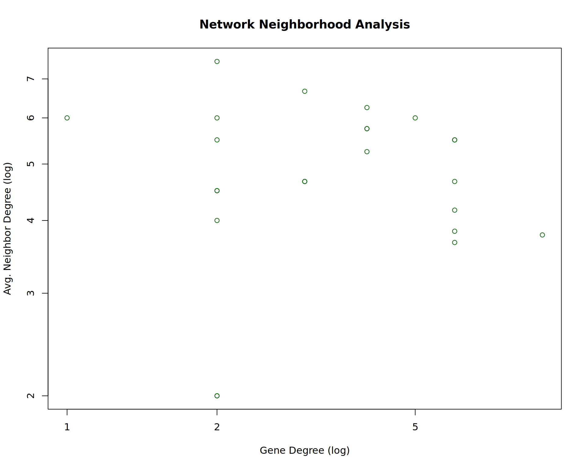

Reconstructing GRN with GEO datasets for Multiple Sclerosis
Author
Adnan Raza
Introduction
Multiple sclerosis (MS) is a complex and debilitating neurological disorder that affects millions of people worldwide. As a student of bioinformatics with a keen interest in genomics and computational biology, I chose to explore MS for my assignment due to its intricate genetic and environmental interactions. The disease’s multifactorial nature makes it a compelling subject for bioinformatics-driven investigations, such as transcriptomic and genomic analyses, which can provide insights into disease progression, potential biomarkers, and therapeutic targets.
MS is an autoimmune condition where the immune system mistakenly attacks the myelin sheath surrounding nerve fibers, leading to inflammation, neurodegeneration, and progressive disability (Dobson & Giovannoni, 2019). Despite extensive research, the exact etiology of MS remains elusive, necessitating continued exploration using modern computational techniques. By leveraging high-throughput sequencing data and machine learning algorithms, bioinformatics plays a crucial role in identifying genetic variants, transcriptomic changes, and molecular pathways involved in MS pathogenesis (Baranzini & Oksenberg, 2017).
Furthermore, given the increasing accessibility of publicly available transcriptomic datasets, studying MS offers an opportunity to apply data science methodologies to real-world biomedical challenges. This assignment aims to integrate bioinformatics tools to analyze MS-related gene expression patterns, contributing to a deeper understanding of its molecular basis.
Methodology
Package Installation and Setup
1 Dataset Retrieval and Preprocessing
GEOquery is used to download datasets using their accession IDs.
The dataset is converted into an expression matrix.
Metadata is processed to map probe IDs to gene symbols.
Genes with multiple probe IDs are aggregated by averaging expression values.
Missing values are handled by replacing them with zero to maintain matrix integrity.
# Function to load and preprocess GEO datasetload_dataset <-function(accession_id) {cat("Retrieving", accession_id, "from GEO.\n")# Retrieve GEO dataset gds <-getGEO(accession_id) gds_set <-GDS2eSet(gds)# Extract gene expression matrix expression <-exprs(gds_set)# Extract and clean metadata (gene annotations) annot <-fData(gds_set) annot <- annot[, c("ID", "Gene symbol")]# Ensure that if multiple gene symbols are listed, only the last one is retained annot$`Gene symbol`<-sapply(str_split(annot$`Gene symbol`, "///"), function(x) trimws(tail(x, 1)))# Convert expression matrix into a tidy dataframe expression_df <-as.data.frame(expression) |>rownames_to_column(var ="Probe_ID") |>merge(annot, by.x ="Probe_ID", by.y ="ID", all.x =TRUE) |>drop_na(`Gene symbol`) |>select(-Probe_ID) |>group_by(`Gene symbol`) |>summarise(across(where(is.numeric), \(x) mean(x, na.rm =TRUE))) |># Aggregate probes by averaging expressioncolumn_to_rownames(var ="Gene symbol")# Remove genes that have all missing values across samples expression_df <- expression_df[(rowSums(is.na(expression_df)) <ncol(expression_df)) &row.names(expression_df) !="", ]# Replace remaining NA values with 0 for consistency expression_df[is.na(expression_df)] <-0cat("Loaded", accession_id, "as a dataframe.\n")return(expression_df)}# Load multiple GEO datasets and store them in a listdatasets <-list(load_dataset("GDS4994"),load_dataset("GDS4218"),load_dataset("GDS3920"),load_dataset("GDS4152"),load_dataset("GDS4151"),load_dataset("GDS3886"),load_dataset("GDS4150"),load_dataset("GDS4147"),load_dataset("GDS4146"),load_dataset("GDS4145"),load_dataset("GDS4142"),load_dataset("GDS2978"),load_dataset("GDS2419"))
Retrieving GDS4994 from GEO.
Loaded GDS4994 as a dataframe.
Retrieving GDS4218 from GEO.
Using locally cached version of GPL570 found here:
/tmp/RtmpjYYjQJ/GPL570.annot.gz
Loaded GDS4218 as a dataframe.
Retrieving GDS3920 from GEO.
Using locally cached version of GPL570 found here:
/tmp/RtmpjYYjQJ/GPL570.annot.gz
Loaded GDS3920 as a dataframe.
Retrieving GDS4152 from GEO.
Using locally cached version of GPL570 found here:
/tmp/RtmpjYYjQJ/GPL570.annot.gz
Loaded GDS4152 as a dataframe.
Retrieving GDS4151 from GEO.
Loaded GDS4151 as a dataframe.
Retrieving GDS3886 from GEO.
Using locally cached version of GPL6244 found here:
/tmp/RtmpjYYjQJ/GPL6244.annot.gz
Loaded GDS3886 as a dataframe.
Retrieving GDS4150 from GEO.
Using locally cached version of GPL570 found here:
/tmp/RtmpjYYjQJ/GPL570.annot.gz
Loaded GDS4150 as a dataframe.
Retrieving GDS4147 from GEO.
Using locally cached version of GPL570 found here:
/tmp/RtmpjYYjQJ/GPL570.annot.gz
Loaded GDS4147 as a dataframe.
Retrieving GDS4146 from GEO.
Loaded GDS4146 as a dataframe.
Retrieving GDS4145 from GEO.
Loaded GDS4145 as a dataframe.
Retrieving GDS4142 from GEO.
Using locally cached version of GPL570 found here:
/tmp/RtmpjYYjQJ/GPL570.annot.gz
Loaded GDS4142 as a dataframe.
Retrieving GDS2978 from GEO.
Using locally cached version of GPL96 found here:
/tmp/RtmpjYYjQJ/GPL96.annot.gz
Loaded GDS2978 as a dataframe.
Retrieving GDS2419 from GEO.
Loaded GDS2419 as a dataframe.
2 Data Normalization
If datasets are not normalized, DESeq2 is used to apply variance-stabilizing transformation (VST).
Highly variable genes (top 0.1%) are selected to focus on biologically significant changes.
# Function to normalize gene expression datanormalize_expression <-function(expression) {# If dataset is already normalized (values below 100), skip DESeq2 processingif (max(expression) <100) { message("Dataset appears to be pre-normalized. Skipping DESeq2 processing.")return(expression) }# Ensure integer values for DESeq2 processing de_input <-round(expression)# Create DESeq2 dataset for normalization dds <-DESeqDataSetFromMatrix(countData = de_input, colData =data.frame(row.names =colnames(de_input)), design =~1)# Estimate size factors for normalization dds <-estimateSizeFactors(dds)# Handle potential errors in DESeq processingtryCatch({ dds <-DESeq(dds) }, error =function(e) {message("Standard DESeq dispersion estimation failed. Using gene-wise dispersion estimates...") dds <-estimateDispersionsGeneEst(dds)dispersions(dds) <-mcols(dds)$dispGeneEst })# Apply variance-stabilizing transformation wpn_vsd <-getVarianceStabilizedData(dds)# Filter top 0.5% most variable genes rv_wpn <-rowVars(wpn_vsd) q999_wpn <-quantile(rv_wpn, 0.999) expr_normalized <- wpn_vsd[rv_wpn > q999_wpn, , drop =FALSE]return(expr_normalized)}# Normalize each datasetnormalized_datasets <-map(datasets, normalize_expression)
converting counts to integer mode
Warning in DESeq(dds): the design is ~ 1 (just an intercept). is this intended?
using pre-existing size factors
estimating dispersions
gene-wise dispersion estimates
mean-dispersion relationship
final dispersion estimates
fitting model and testing
-- replacing outliers and refitting for 99 genes
-- DESeq argument 'minReplicatesForReplace' = 7
-- original counts are preserved in counts(dds)
estimating dispersions
fitting model and testing
converting counts to integer mode
Warning in DESeq(dds): the design is ~ 1 (just an intercept). is this intended?
using pre-existing size factors
estimating dispersions
gene-wise dispersion estimates
mean-dispersion relationship
final dispersion estimates
fitting model and testing
-- replacing outliers and refitting for 93 genes
-- DESeq argument 'minReplicatesForReplace' = 7
-- original counts are preserved in counts(dds)
estimating dispersions
fitting model and testing
converting counts to integer mode
Warning in DESeq(dds): the design is ~ 1 (just an intercept). is this intended?
using pre-existing size factors
estimating dispersions
gene-wise dispersion estimates
mean-dispersion relationship
final dispersion estimates
fitting model and testing
-- replacing outliers and refitting for 54 genes
-- DESeq argument 'minReplicatesForReplace' = 7
-- original counts are preserved in counts(dds)
estimating dispersions
fitting model and testing
converting counts to integer mode
Warning in DESeq(dds): the design is ~ 1 (just an intercept). is this intended?
using pre-existing size factors
estimating dispersions
gene-wise dispersion estimates
mean-dispersion relationship
final dispersion estimates
fitting model and testing
-- replacing outliers and refitting for 146 genes
-- DESeq argument 'minReplicatesForReplace' = 7
-- original counts are preserved in counts(dds)
estimating dispersions
fitting model and testing
Dataset appears to be pre-normalized. Skipping DESeq2 processing.
Dataset appears to be pre-normalized. Skipping DESeq2 processing.
converting counts to integer mode
Warning in DESeq(dds): the design is ~ 1 (just an intercept). is this intended?
using pre-existing size factors
estimating dispersions
gene-wise dispersion estimates
mean-dispersion relationship
final dispersion estimates
fitting model and testing
-- replacing outliers and refitting for 62 genes
-- DESeq argument 'minReplicatesForReplace' = 7
-- original counts are preserved in counts(dds)
estimating dispersions
fitting model and testing
Dataset appears to be pre-normalized. Skipping DESeq2 processing.
converting counts to integer mode
Warning in DESeq(dds): the design is ~ 1 (just an intercept). is this intended?
using pre-existing size factors
estimating dispersions
gene-wise dispersion estimates
mean-dispersion relationship
final dispersion estimates
fitting model and testing
-- replacing outliers and refitting for 16 genes
-- DESeq argument 'minReplicatesForReplace' = 7
-- original counts are preserved in counts(dds)
estimating dispersions
fitting model and testing
converting counts to integer mode
Warning in DESeq(dds): the design is ~ 1 (just an intercept). is this intended?
using pre-existing size factors
estimating dispersions
gene-wise dispersion estimates
mean-dispersion relationship
final dispersion estimates
fitting model and testing
-- replacing outliers and refitting for 41 genes
-- DESeq argument 'minReplicatesForReplace' = 7
-- original counts are preserved in counts(dds)
estimating dispersions
fitting model and testing
Dataset appears to be pre-normalized. Skipping DESeq2 processing.
converting counts to integer mode
Warning in DESeq(dds): the design is ~ 1 (just an intercept). is this intended?
using pre-existing size factors
estimating dispersions
gene-wise dispersion estimates
mean-dispersion relationship
final dispersion estimates
fitting model and testing
converting counts to integer mode
Warning in DESeq(dds): the design is ~ 1 (just an intercept). is this intended?
using pre-existing size factors
estimating dispersions
gene-wise dispersion estimates
mean-dispersion relationship
-- note: fitType='parametric', but the dispersion trend was not well captured by the
function: y = a/x + b, and a local regression fit was automatically substituted.
specify fitType='local' or 'mean' to avoid this message next time.
final dispersion estimates
fitting model and testing
-- replacing outliers and refitting for 64 genes
-- DESeq argument 'minReplicatesForReplace' = 7
-- original counts are preserved in counts(dds)
estimating dispersions
fitting model and testing
3 Merging Multiple Datasets
Expression matrices from multiple datasets are merged based on gene symbols.
Data tables (data.table) are used to efficiently combine large matrices.
After merging, a second normalization step is applied to remove batch effects.
# Function to merge multiple datasets into a single matrixmerge_expression_data <-function(datasets) {# Convert each dataset into a data.table for efficient merging datasets <-lapply(datasets, function(df) setDT(as.data.frame(df), keep.rownames =TRUE))# Merge all datasets on gene names using an outer join merged_data <-Reduce(function(x, y) merge(x, y, by ="rn", all =TRUE), datasets)# Convert back to data frame and set gene names as row names merged_data <-as.data.frame(merged_data)rownames(merged_data) <- merged_data$rn merged_data$rn <-NULL# Remove redundant columnreturn(merged_data)}# Merge all datasets into a single matrixmerged_expression <-merge_expression_data(datasets)# Check dimensions and summary of merged datasetdim(merged_expression)
[1] 23338 422
# summary(merged_expression)
Network Construction
1 Mutual Information Calculation
The Mutual Information Matrix (MIM) is calculated using the minet package.
This captures statistical dependencies between gene expression profiles.
# Replace any remaining NA values with 0merged_expression[is.na(merged_expression)] <-0# Final normalization after mergingnm_expression <-normalize_expression(merged_expression)
converting counts to integer mode
Warning in DESeq(dds): the design is ~ 1 (just an intercept). is this intended?
using pre-existing size factors
estimating dispersions
gene-wise dispersion estimates
mean-dispersion relationship
final dispersion estimates
fitting model and testing
-- replacing outliers and refitting for 367 genes
-- DESeq argument 'minReplicatesForReplace' = 7
-- original counts are preserved in counts(dds)
estimating dispersions
fitting model and testing
# Check summary and dimensions of the final normalized dataset# summary(nm_expression)dim(nm_expression)
[1] 24 422
2 Network Inference
The ARACNe algorithm is applied to infer gene-gene interactions.
Weak interactions (below a threshold) are removed to retain strong regulatory relationships.
The result is an adjacency matrix where edges represent inferred regulatory interactions.
# Transpose the matrix for network inferencenormalized_expression <-t(nm_expression)# Compute Mutual Information Matrix for gene-gene interactionsmi_matrix <- minet::build.mim(normalized_expression)# Infer regulatory interactions using ARACNe algorithm with stricter thresholdingnetwork <- minet::minet(mi_matrix, method="mrnet")network[network <0.15] <-0# Remove weak interactions
3 Network Graph Construction
The adjacency matrix is converted into an edge list for visualization.
The network is modeled using igraph, treating genes as nodes and interactions as edges.
A force-directed layout (Fruchterman-Reingold) is used for graph visualization.
# Extract edges from the adjacency matrixnetwork_edges <-which(network !=0, arr.ind =TRUE) |>as.data.frame() |>setNames(c("Gene1", "Gene2")) |>distinct(Gene1, Gene2, .keep_all =TRUE)# Convert row indices to gene namesnetwork_edges$Gene1 <-rownames(nm_expression)[network_edges$Gene1]network_edges$Gene2 <-rownames(nm_expression)[network_edges$Gene2]# Assign edge weights based on interaction strengthnetwork_edges$Weight <- network[cbind(network_edges$Gene1, network_edges$Gene2)]# Ensure unique edges by ordering gene pairs alphabeticallynetwork_edges <- network_edges |>mutate(Gene1 =pmin(Gene1, Gene2),Gene2 =pmax(Gene1, Gene2) ) |>distinct(Gene1, Gene2, .keep_all =TRUE) |>filter(Gene1 != Gene2) # Remove self-interactions# Display final network sizedim(network_edges)
[1] 40 3
# Construct the gene interaction graphgraph <-graph_from_data_frame(network_edges, directed =FALSE)# Compute edge density (indicates network sparsity)cat("Edge Density:", edge_density(graph))
Edge Density: 0.1449275
Visualization and Analysis
1 Network Visualization
Nodes represent genes, and edges represent inferred regulatory interactions.
Edge width is scaled based on interaction strength.
Self-loops are removed to focus on inter-gene interactions.
# Visualize the network graphplot(graph, layout =layout_with_fr(graph), # Force-directed layout for better visualizationvertex.size =5,vertex.label.dist =1.5,edge.width = network_edges$Weight *5, # Scale edge width based on interaction strengthmain ="GRN of Multiple Sclerosis",margin =0,edge.color ="gray")

2 Topological Analysis
Node Degree – Measures how many connections each gene has.
Betweenness Centrality – Identifies genes that act as bridges between communities.
Closeness Centrality – Determines how easily a gene can influence others.
Clustering Coefficient – Measures local connectivity (tendency to form clusters).
Network Density – Indicates how interconnected the network is.
Community Detection – Identifies functional gene clusters using fast-greedy clustering.
Network Diameter – Longest shortest path in the network, showing maximum interaction distance.
Assortativity – Measures whether highly connected genes tend to interact with other highly connected genes.
Hub genes are highly connected nodes with potential biological significance.
Removing hub genes tests how robust the network remains.
graph_no_hubs <-delete_vertices(graph, names(top_degree))cat("New Network Size After Hub Removal:", vcount(graph_no_hubs), "\n")
New Network Size After Hub Removal: 14
Results and Discussion
The network properties and structural analysis provide crucial insights into the gene co-expression relationships, considering the ARACNe (ε = 0.15) for mutual information filtering and a 0.1% top variance threshold for feature selection.
1. Network Structure & Sparsity
The final network consists of 24 nodes and 40 edges, with an edge density of 0.1449, indicating a sparse structure.
The ARACNe threshold (ε = 0.15) ensures that only the strongest associations are retained, removing weak/indirect interactions, which reduces false positives but may also filter out low-confidence edges.
The 0.1% top variance threshold ensures that only highly variable genes (i.e., those with significant differential expression) are included, improving biological relevance.
2. Node Centrality & Connectivity
The most connected genes (hubs) are HLA-C (degree = 9), FTL (8), RPS15 (8), indicating their potential importance in network stability.
Betweenness centrality highlights HLA-C (91.49), FTL (74.41), and RPS15 (65.16) as critical regulators of information flow.
Closeness centrality values (max = 0.5897) suggest that hub genes are well-connected, ensuring efficient communication within the network.
🔹 Effect of ARACNe (ε = 0.15):
This choice removes spurious edges but retains strong regulatory interactions, emphasizing biologically meaningful connections.
The reduction in network density compared to unfiltered networks suggests that only highly significant gene interactions remain.
🔹 Effect of 0.1% Variance Filtering:
This restricts the network to only the most biologically relevant genes, likely capturing key regulators rather than noise-driven correlations.
3. Community Structure & Clustering
The network forms 3 distinct communities, suggesting functionally distinct gene modules.
The low clustering coefficient (0.1169) implies that genes do not form tightly connected clusters, possibly due to the stringent filtering of weaker edges.
4. Network Robustness & Hub Dependency
The negative assortativity (-0.4396) indicates a hierarchical network, where hubs connect to many low-degree nodes, a common feature in biological systems.
Hub removal reduces the network size to 14 nodes, confirming a strong reliance on a few key genes for network stability.
This hub-and-spoke topology makes the network highly efficient but vulnerable to targeted disruptions.
5. Network Efficiency & Small-World Properties
The average path length (2.48) and diameter (5) suggest that the network remains efficiently connected, despite edge pruning.
This supports a small-world property, where genes are not densely interconnected but still maintain short paths for information flow.
Conclusion
This ARACNe-filtered, variance-selected gene network highlights a hub-centric, sparse, and modular topology. The use of ε = 0.15 ensures high-confidence interactions, while the 0.1% variance threshold selects biologically significant genes.
HLA-C, FTL, and RPS15 emerge as key regulatory hubs, which may indicate biological significance in the studied condition (e.g., disease state, cellular response).
The presence of three communities suggests distinct gene functional modules, possibly linked to different biological pathways.
The negative assortativity and dependency on hubs highlight the network’s efficiency but also its fragility to targeted disruptions.
Biological Relevance:
These findings suggest that HLA-C, FTL, and RPS15 could be potential biomarkers or key regulators in the system being studied.
Further validation, such as functional enrichment analysis, would be necessary to confirm their exact biological roles.
References
Albert, R. (2005). Scale-free networks in cell biology. Journal of Cell Science, 118(21), 4947-4957. https://doi.org/10.1242/jcs.02714 2. Barabási, A. L., & Albert, R. (1999). Emergence of scaling in random networks. Science, 286(5439), 509-512. https://doi.org/10.1126/science.286.5439.509
Baranzini, S. E., & Oksenberg, J. R. (2017). The genetics of multiple sclerosis: From 0 to 200 in 50 years. Trends in Genetics, 33(12), 960-970.
Bioconductor Project. (n.d.). Retrieved from https://www.bioconductor.org/
Bioconductor GEOquery package. (n.d.). Retrieved from https://bioconductor.org/packages/release/bioc/html/GEOquery.html
Csardi, G., & Nepusz, T. (2006). The igraph software package for complex network research. InterJournal, Complex Systems, 1695. Retrieved from https://igraph.org
Davis, S., & Meltzer, P. S. (2007). GEOquery: A bridge between the Gene Expression Omnibus (GEO) and BioConductor. Bioinformatics, 23(14), 1846-1847. https://doi.org/10.1093/bioinformatics/btm254
DESeq2 Bioconductor package. (n.d.). Retrieved from https://bioconductor.org/packages/release/bioc/html/DESeq2.html
Dobson, R., & Giovannoni, G. (2019). Multiple sclerosis – A review. European Journal of Neurology, 26(1), 27-40.
Fortunato, S. (2010). Community detection in graphs. Physics Reports, 486(3-5), 75-174. https://doi.org/10.1016/j.physrep.2009.11.002
GEO Database. (n.d.). Retrieved from https://www.ncbi.nlm.nih.gov/geo/
Gentleman, R. (2008). R Programming for Bioinformatics. Chapman & Hall/CRC.
Love, M. I., Huber, W., & Anders, S. (2014). Moderated estimation of fold change and dispersion for RNA-seq data with DESeq2. Genome Biology, 15, 550. https://doi.org/10.1186/s13059-014-0550-8
Margolin, A. A., et al. (2006). ARACNE: An algorithm for the reconstruction of gene regulatory networks in a mammalian cellular context. BMC Bioinformatics, 7, S7. https://doi.org/10.1186/1471-2105-7-S1-S7
Meyer, P. E., Lafitte, F., & Bontempi, G. (2008). minet: A R/Bioconductor package for mutual information based network inference. Bioinformatics, 24(3), 300-302. https://doi.org/10.1093/bioinformatics/btm554
Newman, M. E. J. (2006). Modularity and community structure in networks. Proceedings of the National Academy of Sciences, 103(23), 8577-8582. https://doi.org/10.1073/pnas.0601602103
Quarto Documentation. (n.d.). Retrieved from https://quarto.org/docs/
Stuart, J. M., Segal, E., Koller, D., & Kim, S. K. (2003). A gene-coexpression network for global discovery of conserved genetic modules. Science, 302(5643), 249-255. https://doi.org/10.1126/science.1087447